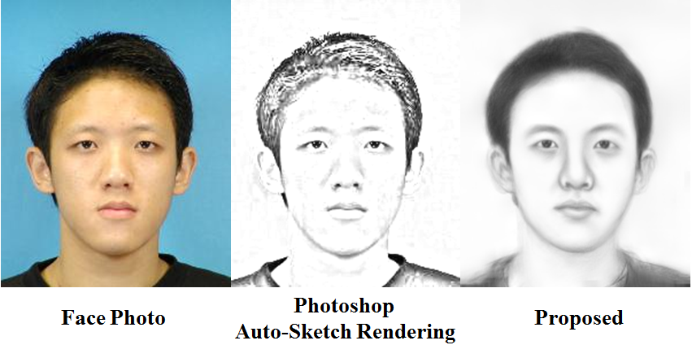

|
European Conference on Computer Vision 2014 Real-Time Exemplar-Based Face Sketch SynthesisYibing Song1 Linchao Bao1 Qingxiong Yang1 Ming-Hsuan Yang2 Topic Background Sketch synthesis is trying to simulate the hand drawing style of artist on generating new images automatically. Existing methods like PhotoShop produce sketch effect according to image edges, which is suitable for normal images. However these methods commonly fail to capture important facial details, which would be sensitive to human beings. So the generated sketches are more like the input images rather than artist work. To solve this problem a training dataset is involved which contains photo-sketch pairs. The output sketch is reconstructed from training sketches through mapping functions learned from input and training photos. Spotlight
Contributions:
Downloads
BibTex (DOI) @inproceedings{song_eccv14_sketch, author = {Song, Yibing and Bao, Linchao and Yang, Qingxiong and Yang, Ming-Hsuan}, title = {Real-Time Exemplar-Based Face Sketch Synthesis}, booktitle = {Proceedings of European Conference on Computer Vision}, pages={800-813}, year = {2014}, } |
Last update: 08/10/2014
![[Poster.jpg]](poster.jpg){kind=link}